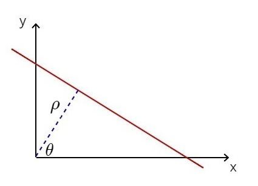
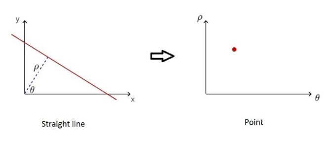
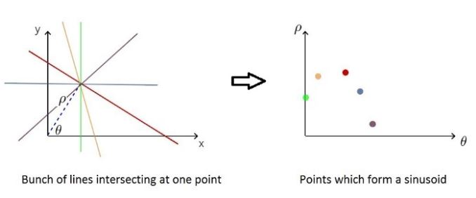
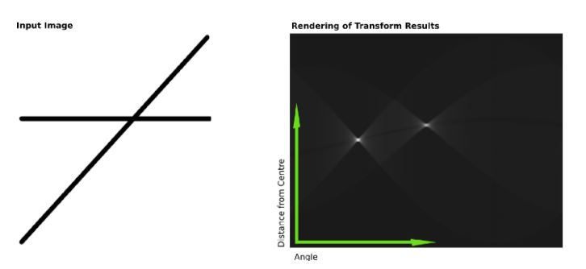
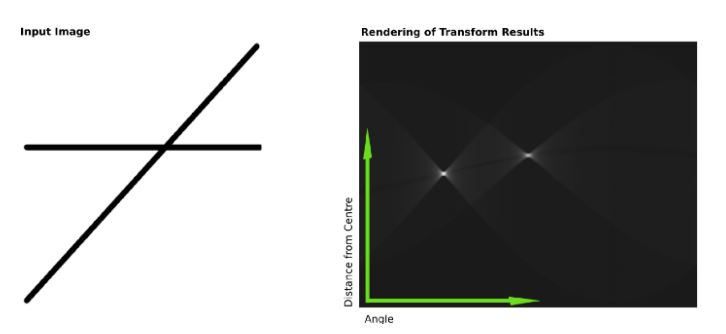

1. Introduction
The Hough line transform is a common algorithm used for detecting lines in images.
We know that a straight line \(y=mx+b\) can be represented as a point \((b,m)\) in the parameter space. However, vertical lines pose a problem because of unbounded values of the slope parameter \(m\).
For example, we have a line depicted in the Cartesian coordinate system as the red line below
The intersection point of the line and the perpendicular line that comes from the origin is \(P_{0}=(\rho\cos{\theta}, \rho\sin{\theta})\).
So, for any point \(P=(x,y)\) on the line, the vectors \(P-P_{0}\) and \(P_{0}-0=P_{0}\) must be orthogonal.
Therefore, \((P-P_{0})\cdot{P_{0}}=0\) or \(P\cdot{P_{0}} = P_{0}\cdot{P_{0}}\)
\(x * \rho\cos{\theta} + y * \rho\sin{\theta}=\rho\cos{\theta} * \rho\cos{\theta} + \rho\sin{\theta} * \rho\sin{\theta}\)
\(\rho(x\cos{\theta} + y\sin{\theta}) = \rho^{2}(cos^{2}{\theta} + sin^{2}{\theta})\)
Since \(cos^{2}{\theta} + sin^{2}{\theta}=1\), \[x\cos{\theta} + y\sin{\theta} = \rho\tag{1}\]
A straight line can also be described as a point \((\rho, \theta)\) in the polar coordinate system.
From \((1)\), with fixed \((x,y)\), a point in the Cartesian system corresponds to a sinusoid in the polar system.
Several points belonging to a straight line in the image space will form multiple sinusoids in the Hough space and they are intersecting at one point.
 

2. Experiment
Demo Hough Line Transform
3. References
- https://en.wikipedia.org/wiki/Hough_transform
- https://learnopencv.com/hough-transform-with-opencv-c-python/
- https://medium.com/@tomasz.kacmajor/hough-lines-transform-explained-645feda072ab